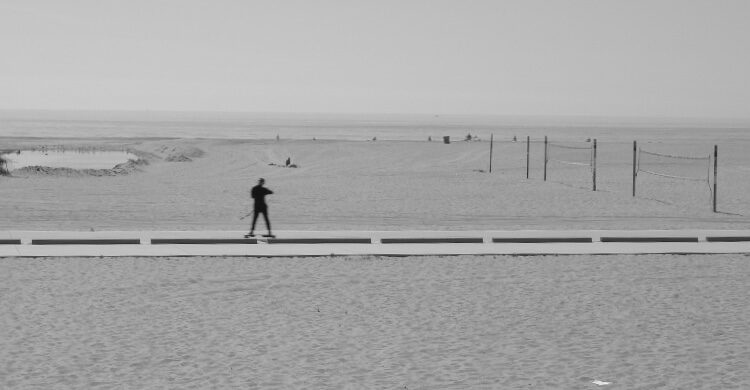

Sontag

A small camera. Fast. Made for the street. Carry it everywhere.
Photography is not recording. It is taking. To photograph is to appropriate. Every frame is a small claim of ownership over a stranger's moment.
The vocabulary admits this. We shoot. We capture. We load a roll. The verbs are violent. We've stopped hearing them.
This is not an argument for putting the camera down. It is an argument for knowing what you are doing when you lift it.
Portfolios argue. Not this is what I saw but this is what deserved seeing. To frame an image is to vote.
Beauty is a trap. Crisp composition of something hard — a man asleep on the sidewalk, a kid crying at a bus stop — risks turning the subject into design. The elegance can honor the moment or consume it. You will not always know which. The question is the work.
The photograph looks like evidence. Something happened. Here is the proof. But everything in the frame is a choice — what's in, what's cropped out, the exact half-second of the shutter. Black and white strips a whole dimension of information and calls it truth. It is not neutral. It was never going to be.
The more pictures we see, the less we feel each one. Call it anesthesia. Repeated exposure to suffering, beauty, spectacle — dulls. A relentlessly dramatic portfolio flattens. Restraint hits harder over time.
Photographs accumulate into a way of seeing the world as a collection. A camera in the pocket trains the walk — mentally cropping the bus stop, the light on the wall, the woman with the coffee — before the shutter has even been considered. The viewfinder threatens to replace the eye.
Do two things. Carry the camera. And sometimes — on purpose — leave it in the bag.
Curate. Show over shoot. Four considered frames over four hundred vanilla ones. Leave behind what doesn't suit you.